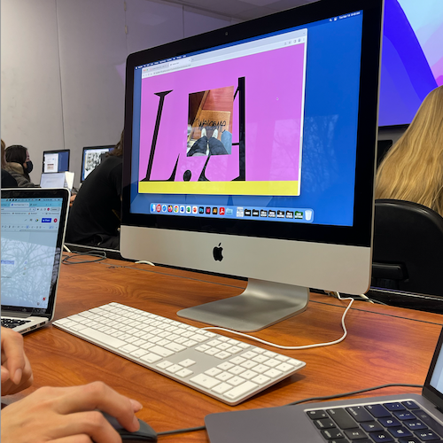
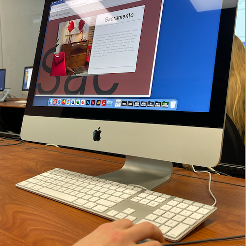

Ricardo Garcia // DES 157
User Tests
Test 01 // Dilara
-Dilara stated that there is no clear way to know that the images are clickable. She suggested that maybe adding a hover button will allow the user to know where to click when scrolling through the page.
-She likes the background text that is svg’s. She thinks that it would look really interesting if they had some movement or animation implemented into them.
-She really likes the overall aestehtic of the project and thinks that the images are paired up very well with the text.

Test 02 // Satomi
-Satomi ended up having an easier time navigating through the site however she had the same issue as tester 1. She did not know that the images were clickable at first. Although she was able to find where to click, she still believes that there should be a feature that lets the user know where they can click.
-Satomi thinks that the design for this page works really well. She stated that the colors look cohesive and thinks that the type looks really good when paired up with the images and colors.
-Satomi had an easy time finding the exit button and also liked the way the blue pops up when you hover ther button. Originally I was going to change the button hover to fit the sizing however from my feedback during this test I learned that the offset placement matches the look to the overall design of the project.

Test 03 // Jaclyn
-Like my two previous tests Jaclyn had trouble finding where to click when looking for more information in the project. She explained that adding a hover animation or even just changing the cursor image to signify that the image is clickable.
-Jaclyn also thinks that adding an overlay on the whole page that hides the information when clicking on the larger image can help the user focus more on one set of information.
-She believes that other than those two critiques that the whole page looks and works very well. She told me that she enjoyed looking at the pictures and reading the backstory to them all.
Final Thoughts
Conducting the user tests for my every picture project helped me gain an outside perspective on the portions of the project that need to be worked on. Thankfully all three of my testers gave me insightful feedback that I could refer to when planning on iterating the project.
I am planning on working on the images and indicating that they are clickable. There are two different ways that I could do this. The first way is by changing the cursor from a regular to a hand icon when hovering over the area of the image.
Another way to show that the image is clickable is by adding a css effect. I was thinking of maybe making the image grow a little bit while a drop shadow shows beneath the image once that it is hovered over. I would also like to work on the borders within all the divs and work on aligning them to look more presentable.